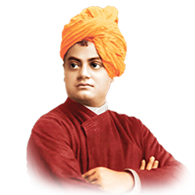

JANUARY
1st January - New Year's Day

New Year's Day is observed on 1 January, the first day of the year on the modern Gregorian calendar as well as the Julian calendar. In pre-Christian Rome under the Julian calendar, the day was dedicated to Janus, god of gateways and beginnings, for whom January is also named. In present day, with most countries now using the Gregorian calendar as their de facto calendar, New Year's Day is among the most celebrated public holidays in the world.
2nd January - Guru Gobind Singh Jayanti
Guru Gobind Singh Jayanti (also spelled Govind Singh) is a Sikh festival that commemorates the birthday of Guru Gobind Singh Ji, the tenth Guru of the Sikhs. It is a religious celebration in which prayers for prosperity are offered. are held at places of worship known as Gurudwaras. Historical lectures are conducted and poems recited as part of praising the Guru on his birthday. Special dishes that are unique to this occasion are prepared and served during the festivities.
12th January - Swami Vivekananda Jayanti 'National Youth Day'
Swami Vivekananda’s birthday is celebrated on the 12th of January every year in India, especially in the state of West Bengal. The day is observed as the National Youth Day following the Government of India’s declaration of the same in the year 1984. Swami Vivekananda inspired millions of youths throughout the world with his teachings. His prominence was felt at a convention in Chicago in the year 1893 where he was a participant and speaker. His famous speech on India’s spirituality-driven culture and robust history drew praises from the Americans, especially from the intellectual circle. His strong personality, vast knowledge in science and Vedanta, and empathy towards human and animal life, made him the torchbearer of peace and humanity.
13th January - Lohri
Lohri celebrations mark the beginning of the harvest season. It is celebrated to offer thanks for making a bounteous harvest possible. Lohri night traditionally falls on the longest night of the year known as the winter solstice. Lohri festival indicates that the biting cold of the winter is ending and happy sunny days are arriving.
15th January - Makar Sankranti, Pongal
Makar Sankranti marks the transition of the Sun into the zodiacal sign of Makar (cancer). It also marks the end of the winter solstice, which symbolizes the end of the long winter nights and the celebration at the coming of the long sunny days. It also signifies the happiness of the farmers at getting new crops. But now days the biggest attraction of Makar Sankranti is kite flying. Kids and adults alike from the entire neighbourhood bond together to fly kites. A festival that helps the community come together, enjoy and celebrate.
23rd January - Netaji Subash Chandra Bose Jayanti
“Give me your blood, and I shall give you freedom”—the quote by Netaji Subhas Chandra Bose inspired thousands of Indian youths to join the struggle for independence from the British colonial rule. A pivotal figure in India’s freedom movement, Netaji is considered by many as one of the greatest leaders ever born. He formed the Azad Hind Fauj, a military regiment designed to counter the British. With socialist beliefs and thoughts, Netaji inspired millions of youths to join the struggle for independence.
26th January - Republic Day
Republic Day is a national holiday in India. It honours the date on which the Constitution of India came into effect on 26 January 1950 replacing the Government of India Act (1935) as the governing document of India and thus, turning the nation into a newly formed republic.
30th January - Vasant Panchami
Predominantly a Hindu festival, Vasant Panchami marks the end of winter and the beginning of spring. In West Bengal, the day is celebrated as Saraswati Puja, where people offer prayers to Saraswati, the goddess of wisdom. The Vasant Utsava (festival) on Panchami is celebrated forty days before Spring, because any season's transition period is 40 days, and after that, the season comes into full bloom.